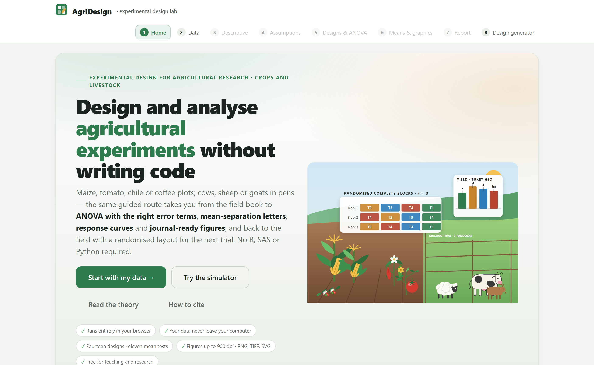
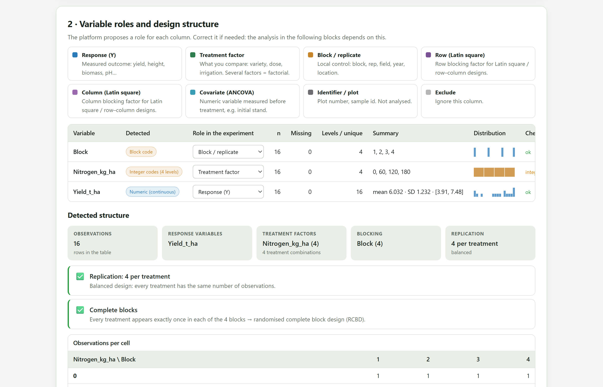
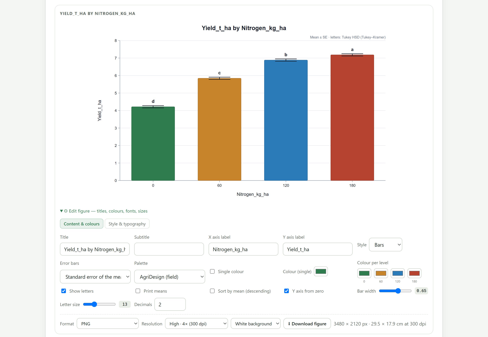
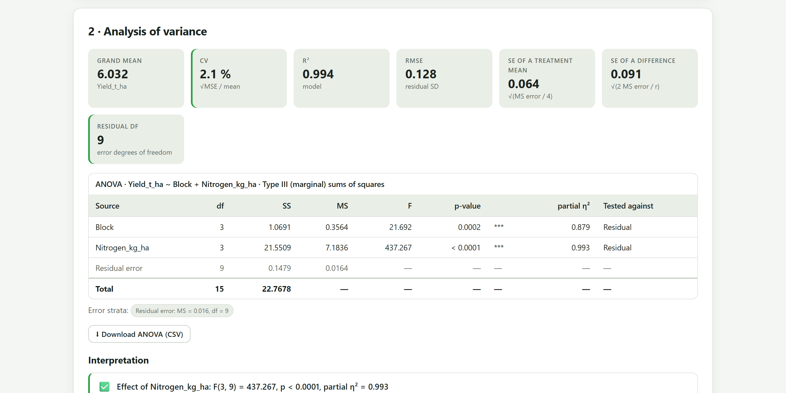

El identificador de objeto digital (DOI) 10.5281/zenodo.22683046 lleva siempre a la versión más reciente del programa; cada versión tiene además el suyo en el registro del archivo (la 1.0, por ejemplo, 10.5281/zenodo.22683047). Código fuente: https://github.com/luisangelbg/AgriDesign · versión en línea: https://luisangelbg.github.io/AgriDesign/
AgriDesign funciona por completo dentro de tu navegador. Los archivos que abres se leen en tu computadora y nunca se envían a ningún servidor. Puedes analizar ensayos inéditos, datos de tesis en curso o resultados sujetos a convenios con empresas sin riesgo de que salgan de tu equipo.
Las ilustraciones, diagramas y capturas de pantalla de este manual son originales y se generaron con el propio programa o con código escrito para el manual. Los siete conjuntos de datos de ejemplo se describen en la sección 1.7; son ensayos didácticos con valores simulados a partir de rendimientos típicos, no resultados de experimentos reales.
El manual sigue el mismo orden que la app: ocho bloques numerados que se recorren de izquierda a derecha en la barra superior. Cada capítulo explica un bloque, empieza con un poco de teoría fácil de digerir, describe lo que calcula y termina con un ejemplo paso a paso con los datos que ya vienen dentro del programa.
El color del bloque aparece en la apertura de su capítulo, en los números de sección, en los recuadros de teoría y en el índice. Así sabes de un vistazo en qué parte de la app estás.
| Bloque | Nombre en la app | Qué hace |
|---|---|---|
| 1 | Home | Portada, simulador de bloques, teoría esencial y cómo citar |
| 2 | Data | Carga de la libreta de campo, revisión de la tabla y roles de las variables |
| 3 | Descriptive | Estadística descriptiva y gráficos exploratorios por tratamiento y bloque |
| 4 | Assumptions | Supuestos del ANOVA, transformaciones y alternativas no paramétricas |
| 5 | Designs & ANOVA | Diseño experimental, análisis de varianza, pruebas de medias, tendencias y contrastes |
| 6 | Means & graphics | Galería de figuras editables para publicar |
| 7 | Report | Informe automático, PDF y paquete con tablas y figuras |
| 8 | Design generator | Aleatorización, croquis, libreta de campo y número de repeticiones |
Aclaraciones y consejos prácticos que ahorran tiempo.
Lo que puede cambiar tus conclusiones si se pasa por alto.
La idea detrás de un análisis, sin fórmulas innecesarias.
Un caso completo con los datos incluidos en el programa.
| Si el valor cae en este intervalo… | entonces esta es la lectura recomendada. |
Son guías para interpretar, no leyes: el cultivo, el sitio y el objetivo del ensayo siempre mandan.
| Así se escribe | Significa |
|---|---|
| Run the analysis | Un botón, casilla o menú de la app, con su texto en inglés tal como aparece en pantalla. |
| Edit figure›Style & typography | Una ruta: abre el primer elemento y luego el segundo. |
rcbd_maize_nitrogen.csv | Un nombre de archivo, columna o valor que se escribe tal cual. |
| F, P, CV, η²p | Estadísticos; su significado se explica la primera vez que aparecen. |
| ● ◐ — | Disponible · disponible en parte o con condiciones · no aplica. |
Qué es el programa, qué preguntas responde, qué experimentos y datos acepta y cómo se recorre de principio a fin. Incluye las ideas básicas del diseño experimental que necesitas para aprovechar el resto del manual.
AgriDesign es una plataforma para diseñar y analizar experimentos agrícolas de la libreta de campo al artículo: recibe la tabla con los datos del ensayo, la revisa, ajusta el análisis de varianza con los términos de error correctos para el diseño, separa las medias con letras, ajusta curvas de respuesta y entrega figuras e informes listos para publicar. También hace el camino inverso: a partir de un diseño genera la aleatorización, el croquis y la libreta del siguiente ensayo.
Todo ocurre dentro del navegador de internet. No hay que instalar nada, no se necesita saber programar y los datos no salen de la computadora. Los mismos pasos sirven para parcelas de maíz, trigo o frijol, macetas de jitomate o chile, cafetos, corrales con vacas, borregos o cabras, cajas de germinación y escalas de severidad de enfermedades: la ruta es la misma porque la lógica del diseño experimental es la misma.

1 2 3 4 5 6index.html. No requiere permisos de administrador ni conexión a internet.| Etapa | Lo que obtienes | Bloque |
|---|---|---|
| Entrada de datos | Lectura de hojas de cálculo (.xlsx, .xls, .ods, .csv, .tsv, .txt) y del portapapeles; revisión de que la tabla esté en formato largo; conversión de tablas anchas. | 2 |
| Roles y estructura | Cada columna recibe un papel (respuesta, factor, bloque, fila, columna, covariable, identificador) y la app deduce el diseño: bloques completos, balance, número de repeticiones. | 2 |
| Descripción | Medias, desviaciones, coeficiente de variación, asimetría y valores atípicos por tratamiento, bloque o combinación; histogramas, cajas, violines, perfiles por bloque e interacciones. | 3 |
| Supuestos | Normalidad, homogeneidad de varianzas, aditividad e independencia sobre los residuales del modelo; transformaciones con perfil de Box–Cox; ruta no paramétrica con letras. | 4 |
| Diseño y ANOVA | Catálogo de diseños con sus estratos de error, sumas de cuadrados tipo I y III, η² parcial, CV, medias ajustadas por mínimos cuadrados con su error estándar. | 5 |
| Medias y tendencias | Once pruebas de separación de medias con letras, efectos simples en factoriales, polinomios ortogonales con la curva ajustada y su óptimo, contrastes a la medida. | 5 |
| Figuras | Galería editable: medias con letras, diferencias con intervalos, curvas de respuesta, interacciones, partición de la varianza, mapas de campo; composiciones multipanel; estilos de revista. | 6 |
| Publicación | Informe completo con métodos redactados, tablas, figuras tal como las editaste y apéndices; PDF; paquete ZIP con datos, tablas CSV y figuras a la resolución elegida. | 7 |
| Planeación | Aleatorización reproducible con semilla, croquis de campo exportable, libreta de campo con columnas vacías y calculadora de repeticiones y potencia. | 8 |
Para quien conduce ensayos con cultivos o animales y quiere resultados sólidos sin pelear con formatos ni líneas de comando: estudiantes de licenciatura y posgrado que analizan su primer experimento, investigadores y técnicos de estaciones experimentales, mejoradores que evalúan variedades, asesores que comparan fertilizantes o dietas, y docentes que necesitan mostrar en clase por qué se aleatoriza, por qué se bloquea y cómo se lee una tabla de ANOVA. Cada resultado viene acompañado de un párrafo que lo interpreta en lenguaje llano, lo que convierte a la app también en una herramienta de enseñanza.
Un buen análisis empieza con una pregunta agronómica. La tabla siguiente traduce las preguntas más frecuentes de un ensayo al análisis que las responde y al bloque donde se encuentra.
| Pregunta | Análisis que la responde | Bloque |
|---|---|---|
| ¿Mi libreta de campo está bien armada para analizarla? | Revisión de la tabla larga: una fila por unidad experimental, una columna por variable; detección de celdas vacías, duplicados y balance. | 2 |
| ¿Cuánto varían los rendimientos dentro de cada tratamiento? ¿Hay parcelas raras? | Estadística descriptiva por tratamiento y bloque, coeficiente de variación, valores atípicos, gráficos de caja y perfiles por bloque. | 3 |
| ¿Puedo usar un ANOVA con estos datos o debo transformarlos? | Pruebas de normalidad y homogeneidad de varianzas sobre los residuales, gráficos de residuales, comparación de transformaciones y perfil de Box–Cox. | 4 |
| Mis datos son calificaciones del 1 al 9. ¿Qué hago? | Ruta no paramétrica: Kruskal–Wallis, Friedman, Scheirer–Ray–Hare o ANOVA de rangos alineados, con sus comparaciones y letras. | 4 |
| ¿Los tratamientos difieren? ¿Sirvió bloquear? | Tabla de ANOVA del diseño con sus estratos de error, valor F y P de cada fuente, η² parcial y CV. | 5 |
| ¿Qué tratamientos difieren entre sí? | Medias ajustadas y prueba de separación de medias (Tukey, LSD, Duncan, Dunnett…) con letras compactas. | 5 |
| ¿La mejor variedad depende de la dosis de fertilizante? | Interacción en el factorial, efectos simples por rebanadas y comparaciones dentro de cada nivel. | 5 |
| ¿Cuál es la dosis óptima de nitrógeno? | Polinomios ortogonales, curva de respuesta ajustada y punto óptimo. | 5 |
| ¿El peso inicial de los animales influye en la comparación de dietas? | Análisis de covarianza: la covariable entra al modelo y las medias se ajustan a su promedio. | 5 |
| ¿Cómo presento los resultados en el artículo? | Figuras editables a resolución de revista, párrafo de métodos redactado e informe completo. | 6 7 |
| ¿Cuántas repeticiones necesito y cómo acomodo las parcelas? | Calculadora de potencia, aleatorización con semilla, croquis y libreta de campo. | 8 |
Toda la app descansa en cinco ideas. Si las tienes claras, cada bloque se explica solo.
Es la porción de material a la que se le asigna, por sorteo, un tratamiento: la parcela, la maceta, el corral, el animal o la caja de germinación. Las repeticiones se cuentan en unidades experimentales, no en plantas medidas. Si un corral con 20 borregos recibe una dieta, el corral es la repetición y los 20 pesos son submuestras; promediarlos y analizar un solo valor por corral es lo correcto. Contar cada borrego como repetición infla artificialmente los grados de libertad y produce diferencias «significativas» que no existen. El Bloque 2 te pide precisamente que identifiques esa unidad.
Cada tratamiento se aplica a varias unidades experimentales. Sin repetición no hay manera de estimar el error experimental, es decir, cuánto varían dos parcelas que recibieron el mismo tratamiento, y sin esa estimación ninguna diferencia entre tratamientos puede juzgarse. Tres repeticiones es el mínimo habitual en campo; cuatro o más dan al análisis la sensibilidad que un ensayo caro merece. El Bloque 8 calcula cuántas necesitas para detectar la diferencia que te importa.
Los tratamientos se reparten entre las unidades por sorteo, no por comodidad ni por criterio del investigador. Es lo que garantiza que ninguna causa desconocida (una franja húmeda, el orden de siembra, la hora de la medición) favorezca sistemáticamente a un tratamiento, y lo que hace válidos los valores P. El Bloque 8 hace el sorteo con una semilla que puedes anotar para reproducirlo.
Cuando el material no es homogéneo (un terreno con pendiente, animales de distinta edad, varios días de trabajo), se agrupan las unidades parecidas en bloques y cada bloque recibe todos los tratamientos. La variación entre bloques se separa en el ANOVA y ya no estorba a las comparaciones. El bloque es el diseño más usado en agricultura por una razón: casi nunca el terreno es uniforme. Los cuadros latinos bloquean en dos direcciones; los diseños de parcelas divididas y en franjas acomodan factores que no se pueden aleatorizar en parcelas pequeñas, como el riego o la labranza.
Cada observación se descompone en una media general, el efecto del tratamiento, el efecto del bloque (si lo hay) y un residuo: y = μ + tratamiento + bloque + ε. El residuo ε es el error experimental, y el ANOVA compara la variación debida a los tratamientos con esa variación de fondo mediante el cociente F. En los diseños con parcelas divididas hay más de un error, uno por tamaño de parcela, y cada factor debe compararse con el suyo: eso es lo que la app llama «estratos de error» y lo que resuelve automáticamente en el Bloque 5.
El análisis debe reflejar cómo se acomodaron y sortearon las parcelas. Si sembraste en bloques, analiza en bloques; si el riego se aplicó a franjas grandes y las variedades a parcelas pequeñas dentro de ellas, es un diseño de parcelas divididas aunque la tabla se vea como un factorial. AgriDesign sugiere el diseño a partir de la estructura de la tabla, pero tú confirmas cuál fue el que se sembró.
La app está pensada para los ensayos habituales de la investigación agropecuaria. La tabla siguiente muestra las familias de experimentos y los diseños y métodos que suelen corresponderles.
| Tipo de ensayo | Ejemplos | Diseños y métodos habituales |
|---|---|---|
| Cultivos de campo | Maíz, trigo, frijol, sorgo: parcelas en bloques a lo largo del gradiente de fertilidad; rendimiento en t ha⁻¹, altura, días a floración. | Bloques al azar, cuadro latino, látices |
| Horticultura e invernadero | Jitomate, chile, pepino, ornamentales: macetas o camas, variedades × nutrición, curvas dosis–respuesta y dosis óptimas. | Azar completo, factoriales, tendencias polinómicas |
| Cultivos perennes | Café, cacao, frutales: el árbol o la hilera es la parcela; varias cosechas de las mismas plantas se vuelven medidas repetidas. | Parcelas divididas en el tiempo, covariables |
| Ganadería | Vacas, borregos, cabras: el animal o el corral es la unidad experimental; peso inicial como covariable; dietas, razas y periodos. | Covarianza, cuadro latino, anidados |
| Germinación y laboratorio | Cajas Petri, charolas y frascos: porcentajes y conteos que piden una transformación (arcoseno, raíz cuadrada, logit) o una prueba de rangos. | Azar completo, transformaciones |
| Calificaciones y escalas | Severidad de enfermedad 1–9, vigor 1–5, paneles sensoriales: respuestas ordinales. | Friedman, Kruskal–Wallis, rangos alineados |
Todos los análisis parten de una tabla en formato largo: una fila por unidad experimental (parcela, maceta, animal) y una columna por variable, con los factores y bloques como columnas de texto o códigos y las respuestas como columnas numéricas. Es la forma natural de una libreta de campo bien llevada. Las tablas «anchas», con un tratamiento por columna, son cómodas para verlas pero no para analizarlas; el Bloque 2 tiene un convertidor que las reacomoda.
rcbd_maize_nitrogen.csv.NA, - o . se tratan como datos faltantes; el diseño deja de estar balanceado y la app lo indica.index.html | La app. Ábrela con doble clic. |
Open AgriDesign.bat | Arranque opcional con servidor local. |
js/, css/ | El código del programa. |
data/ | Los siete archivos de ejemplo. |
vendor/ | El lector de hojas de cálculo y su licencia. |
manual/ | Este manual. |
AgriDesign completa a tu computadora, por ejemplo a Documentos. No separes index.html del resto de las carpetas.index.html. Se abrirá en tu navegador predeterminado con la portada del Bloque 1.Con doble clic todo funciona. Si prefieres abrir la app desde una dirección, usa Open AgriDesign.bat: inicia un pequeño servidor en tu propia computadora (dirección http://localhost:8800) y abre la app desde ahí. Sigue sin enviarse nada a internet. La misma app está disponible en línea en https://luisangelbg.github.io/AgriDesign/, también sin que los datos salgan de tu equipo.
La app guarda en tu navegador las preferencias de estilo de las figuras. Si cambias de navegador o borras los datos de navegación, esas preferencias se pierden, pero tus archivos originales no se modifican nunca. Los resultados de un análisis viven en la página mientras esté abierta: descarga el informe o el paquete ZIP del Bloque 7 antes de cerrarla.
Todos los bloques de análisis comparten la misma organización, así que basta aprenderla una vez. De arriba abajo, cada bloque tiene tres partes:
| Parte | Qué contiene | Cómo aparece en pantalla |
|---|---|---|
| 0 · Lo que hay que saber | Una tarjeta plegable con la teoría del bloque en lenguaje llano: qué calcula, cómo leerlo y cuándo desconfiar. | Tarjeta con título en cursiva al inicio del bloque |
| 1 · Opciones | Menús con valores predeterminados que siguen las convenciones más comunes en agronomía, y un botón para calcular. | 1 · Design and options · Run the analysis |
| 2 · Resultados | Tarjetas con los valores principales, tablas descargables, un párrafo de interpretación y figuras editables con controles de estilo y exportación. | Interpretation · Edit figure · Download figure |


1 2 3 4 5 6La app está en inglés, el idioma de las revistas científicas. Esta tabla reúne los términos que verás en todos los bloques.
| En la app | En español | En la app | En español |
|---|---|---|---|
| Response (Y) | Variable de respuesta | Run the analysis | Ejecutar el análisis |
| Treatment factor | Factor de tratamiento | Edit figure | Editar figura |
| Block / replicate | Bloque o repetición | Content & colours | Contenido y colores |
| Covariate | Covariable | Style & typography | Estilo y tipografía |
| Plot · Pen | Parcela · corral | Palette | Paleta de colores |
| Design | Diseño experimental | Error bars | Barras de error |
| Mean-separation test | Prueba de separación de medias | Resolution | Resolución |
| Letters | Letras de significancia | Download | Descargar |
| Random seed | Semilla aleatoria | Report | Informe |
| Continue to … | Continuar a… | How to cite | Cómo citar |
La aleatorización del Bloque 8 y el simulador del Bloque 1 dependen del azar. La Random seed fija ese azar: con la misma semilla y el mismo diseño obtendrás exactamente el mismo croquis. Anota la semilla en el protocolo del ensayo para que la distribución de las parcelas pueda reproducirse; la libreta de campo que genera la app la incluye.
El programa incluye siete conjuntos de datos listos para usar. Están en la carpeta data/ y se cargan con un clic desde el Bloque 2; cada uno está pensado para practicar un diseño distinto. Los capítulos de cada bloque los usan en sus ejemplos paso a paso.
| Botón en la app | Diseño | Contenido | Bloques para practicar |
|---|---|---|---|
| RCBD · maize × nitrogen | Bloques completos al azar | Cuatro dosis de nitrógeno (0, 60, 120 y 180 kg ha⁻¹) en cuatro bloques; rendimiento de maíz en t ha⁻¹. El ejemplo guía de este manual: 16 parcelas, un factor cuantitativo, curva de respuesta y dosis óptima. | 2 3 4 5 6 7 |
| CRD · bean varieties | Azar completo | Cinco variedades de frijol con cuatro repeticiones sin bloques; rendimiento en kg por parcela. Para comparar variedades con una prueba de medias. | 3 5 |
| Latin square · wheat | Cuadro latino | Cuatro tratamientos en un cuadro de 4 filas × 4 columnas; rendimiento de trigo. Bloqueo en dos direcciones. | 2 5 |
| Factorial 3×3 in RCBD · tomato | Factorial en bloques | Tres variedades de jitomate × tres niveles de fertilización en tres bloques, con dos respuestas: rendimiento por planta y altura. Interacción y efectos simples. | 3 5 6 |
| Split-plot · irrigation × variety | Parcelas divididas | Dos sistemas de riego en parcelas grandes y cuatro variedades en subparcelas, tres bloques. Dos estratos de error. | 5 6 |
| Ordinal scores · fungicides | Bloques al azar, respuesta ordinal | Cuatro fungicidas en cinco bloques; severidad de enfermedad en escala 1–9. Ruta no paramétrica con Friedman y letras. | 4 |
| Wide table (needs reshaping) | Tabla ancha | El ensayo de maíz y nitrógeno con una dosis por columna. Para practicar el convertidor de tablas anchas a largas. | 2 |
El ensayo de maíz y nitrógeno acompaña todo el manual. Con él verás, en los capítulos que siguen, que la variación entre bloques fue considerable, que el rendimiento respondió al nitrógeno con una curva que se aplana en las dosis altas y que las cuatro dosis difieren entre sí según Tukey. La figura 1.5 y la figura 1.7 son suyas.
La barra de bloques marca el orden natural. El diagrama resume el recorrido y sus dos desvíos: el que toma la ruta no paramétrica cuando los supuestos no se cumplen, y el que empieza por el Bloque 8 cuando el ensayo todavía no se ha sembrado.
Casi todo lo que produce la app se resume en tres cosas: una tabla de análisis de varianza, valores P y letras junto a las medias. Entenderlas bien evita las equivocaciones más comunes: creer que un resultado no significativo prueba que no hay efecto, creer que uno significativo es necesariamente importante y leer las letras al revés.

Cada fila es una fuente de variación. df son los grados de libertad (niveles menos uno para un factor; lo que sobra para el error). SS es la suma de cuadrados, la cantidad de variación atribuida a esa fuente, y MS la misma cantidad por grado de libertad. F es el cociente entre el MS de la fuente y el MS del error contra el que se prueba (la columna Tested against): un F cercano a 1 dice que los tratamientos varían tanto como las parcelas que recibieron el mismo tratamiento; un F grande, que varían mucho más. El valor P traduce ese F a una probabilidad y el η² parcial dice qué fracción de la variación explica la fuente. En el ejemplo, el nitrógeno tiene F(3, 9) = 437.27 y P < 0.0001: la dosis explica casi toda la variación del rendimiento. Los bloques también difieren (F = 21.69, P = 0.0002): bloquear valió la pena.
Es la probabilidad de observar un F tan grande como el tuyo si en realidad todos los tratamientos tuvieran la misma media. Un P = 0.003 dice que un resultado así ocurriría 3 veces de cada 1000 por puro azar. No es la probabilidad de que la hipótesis sea cierta ni mide el tamaño del efecto.
Es la raíz del cuadrado medio del error dividida entre la media general, en porcentaje. Mide la precisión del ensayo: qué tan parecidas fueron las parcelas con el mismo tratamiento. En el ejemplo es de 2.1 %, muy bajo; en rendimiento de campo, valores de 10 a 20 % son normales y más de 30 % indican un ensayo poco preciso.
| Valor P | Evidencia contra la igualdad de medias | Cómo redactarlo |
|---|---|---|
| P < 0.001 | Muy fuerte | “El efecto del tratamiento fue altamente significativo”. |
| 0.001 ≤ P < 0.01 | Fuerte | “El efecto fue significativo”. |
| 0.01 ≤ P < 0.05 | Moderada | “Hubo evidencia de diferencias”; conviene confirmarlo en otro ciclo o localidad. |
| P ≥ 0.05 | Insuficiente | “No se detectaron diferencias”. No afirmes que los tratamientos son iguales: quizá faltaron repeticiones. |
Reporta siempre el valor exacto de P, el F con sus grados de libertad y el tamaño del efecto (las medias con su error estándar, o η²), no solo si es significativo.
Después de un F significativo, la prueba de separación de medias compara los tratamientos por pares y resume el resultado con letras: dos medias que comparten al menos una letra no difieren al nivel elegido; dos que no comparten ninguna sí difieren. La letra a va a la media mayor. Así, en «7.18 a, 6.89 b, 5.85 c, 4.22 d» las cuatro dosis difieren entre sí; en «7.18 a, 6.89 ab, 5.85 b» la primera y la tercera difieren, pero la de en medio no se distingue de ninguna de las dos. Las letras no ordenan por «calidad»: solo dicen qué diferencias superó la prueba.
Con un ensayo muy preciso, diferencias diminutas resultan significativas. Que la dosis de 180 supere a la de 120 con P < 0.05 no significa que convenga aplicarla: 0.30 t ha⁻¹ más de rendimiento pueden no pagar los 60 kg de nitrógeno adicionales. Pregúntate siempre si la magnitud importa para el productor y el objetivo del ensayo, no solo si el valor P es pequeño. La curva de respuesta y su óptimo, en el Bloque 5, están pensados justamente para esa pregunta.
Con estas bases estás listo para recorrer los bloques. El siguiente capítulo presenta la portada de la app, su teoría integrada y el simulador, una forma rápida de ver en movimiento por qué bloquear mejora un ensayo, la idea de la figura 1.2.